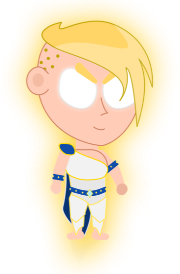
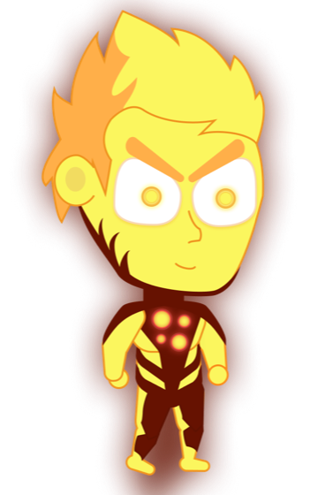
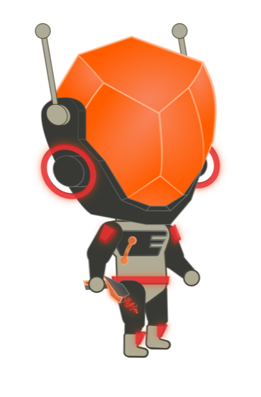
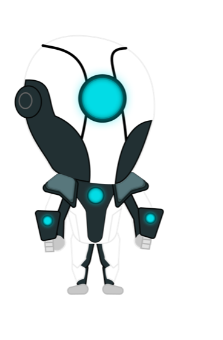
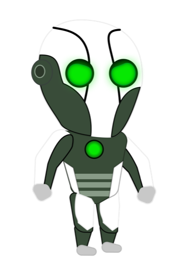
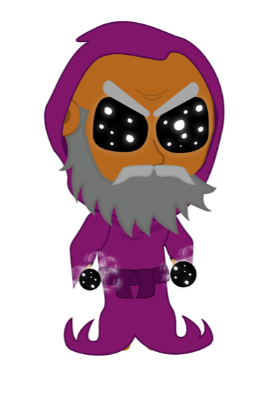
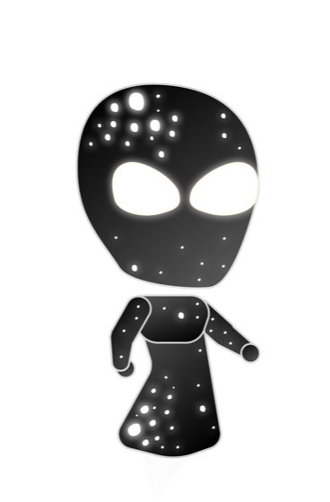

Tiny
Heroes
Um jogo mobile em paisagem sobre montar um esquadrão de pequenos super-heróis. Recrute, treine e cure os heróis em um quartel-general, depois mande um time de três para uma missão. Esta página mostra a interface, dos primeiros wireframes às telas finais.
- PlataformaMobile, paisagem
- GêneroEsquadrão de heróis · missões
- UIHub, gestão de heróis, missão
- Meu papelDesign de UI/UX e de personagens
Pilares da UI
Um prédio, um hub
O hub é um corte de um prédio e cada sala tem uma função: recrutar, treinar, curar, pesquisar, planejar uma missão ou gerenciar heróis. Uma barra no topo mantém à vista os contadores que importam.
O hexágono é o herói
Retratos, poderes, o joystick e o botão de pausa compartilham uma forma. Azul-petróleo é pronto, amarelo é alerta e vermelho é perigo ou perda, então o estado se lê antes do texto.
Colchetes, não caixas
Títulos e botões são emoldurados por dois colchetes de canto, vermelho embaixo à esquerda e azul-petróleo em cima à direita. Dá clima de HUD sem painéis pesados sobre a arte.
Desenhe os estados ruins
Bloqueado, desbloqueado, resgatar, herokens insuficientes, herói caído e missão falhada têm cada um sua tela, então os momentos difíceis não ficam para o código.
Mapa do site
O mapa do site do documento de UI que escrevi para o jogo, em caminhos a partir do hub.
Configurações
Loja
Meus heróis
Missões
Mantras de design
- Pensar com base na monetização
- Fazer o jogo sociável, pensando em multiplayer
- Planejamento em lançamentos parciais
O hub
O hub é um corte de uma base: oito salas ligadas por corredores, com o Hall of the Fallen e o Hall of Fame como conectores. Cada sala abre suas próprias telas, mostradas abaixo com o lugar dela no hub.
As salas liberam conforme você joga
Temas do hub
Torre de vigia (espaço), base na caverna, base em torre, garagem tecnológica, mansão de bilionário. Corredores ligam as salas: o Hall of the Fallen conta as vezes em que seus heróis caíram, o Hall of Fame as vezes em que venceram.
Glossário
Heroics: moeda do jogo. Herokens: moeda de personagem, para comprar heróis. Power Ups: buffs e debuffs. Gadgets: ataques de área de apoio. Hero Packs: dão herokens.
Salas e wireframes
Um bloco por sala: o lugar dela no hub (destacado), o que o documento de UI diz que ela deve mostrar e fazer, e seus wireframes. Clique em qualquer imagem para ampliar.
Hero HQ Sala inicial
Para ver todos os heróis. Os heróis voltam para cá das missões.
Ao entrar na sala
Mostra o “currículo” de cada herói que você tem.
A lista de heróis tem
- Retrato
- Nome
- Nível
- Atributos
- Estado atual (em missão, recuperação, treino…)
Ao escolher um herói aparecem
- Retrato, nome, nível, vida
- Atributos, que podem ser melhorados
- Habilidades
- Estado atual
Ações
- Melhorar atributos
- Comprar habilidades
- Subir o nível do personagem
Temas da sala
Mesa redonda da Liga da Justiça, a mesa dos sete, mesa de jantar, bancada de trabalho, sala de estar dos Jovens Titãs.
Centro de Recrutamento Libera após 4 missões
Para comprar ou recrutar novos heróis.
Ao entrar na sala
Mostra o “currículo” de cada herói e os pacotes de heróis à venda.
A lista mostra
- Retrato
- Vida
- Atributos
- Preço
Ao escolher um aparecem
- Retrato, nível, vida
- Atributos e habilidades
- Preço
Ações
- Comprar herói
- Resgatar herói
Tema da sala
TBD
Research Lab Sala inicial
Para investir em Heroics, power-ups e gadgets. É também a loja.
Ao entrar na sala
- As ofertas atuais vêm primeiro
- Itens à venda em seções: Heroics, Herokens, Power Ups e Gadgets
- Uma seção por tempo limitado: ao ver anúncios, o jogador ganha heroics
A lista de itens mostra
- Ícone, nome, quantidade, preço
- Adicionar à lista de desejos
Ações
- Comprar item
- Adicionar à lista de desejos
Também previsto
- Compra com sucesso e compra com falha
- Comprar sem anúncios (normalmente uns 10 dólares)
- Nota: tratar compras que demoram a ser processadas
Tema da sala
TBD
Mission Control Sala inicial
Para designar missões aos heróis e receber as recompensas das missões diárias.
Ao entrar na sala
Mostra todas as missões disponíveis ao jogador, com uma aba de missões diárias e outra de missões.
A lista de missões mostra
- Miniatura
- Dificuldade
- Nome
Ao escolher uma aparecem
- Miniatura, dificuldade, nome
- Recompensas da missão
- Missões internas que dão mais recompensas
Ações
- Escolher heróis para a missão
- Iniciar missão
Tema da sala
TBD
Sala de Treino Libera após 2 missões
Para treinar heróis.
Ao entrar na sala
Mostra as vagas de treino: 2 liberadas de início e 4 para comprar. Um herói em treino aparece numa animação de treino.
Cada vaga mostra
- Vaga de treino
- Nome e miniatura animada do herói em treino
- Tempo restante
- Preço para reduzir o tempo (em Heroics)
Ao escolher uma vaga vazia
- Treino leve, regular ou pesado
- Herói a treinar
Ações
- Reduzir o tempo pagando
- Escolher o tipo de treino
- Colocar herói na vaga
- Comprar nova vaga
Sala de Recuperação Libera após 4 missões
Para os heróis meditarem e se recuperarem mais rápido das missões.
Ao entrar na sala
Mostra as vagas de recuperação: 2 liberadas de início e 4 para comprar. Um herói em recuperação aparece numa animação de recuperação.
Cada vaga mostra
- Vaga de recuperação
- Nome e miniatura animada do herói em recuperação
- Tempo restante
- Preço para reduzir o tempo (em Heroics)
Ao escolher uma vaga vazia
- Herói a recuperar
Ações
- Reduzir o tempo pagando
- Colocar herói na vaga
- Comprar nova vaga
League Room Libera após 6 missões
Multiplayer online: clãs, raids e ranking.
Três seções
Minha liga, encontrar uma liga e ranking de ligas.
Minha liga
- Nome, missão de equipe, chat
- Ranking, Heroics da liga (moeda)
- Membros e quantidade, descrição, melhor herói
Encontrar uma liga
- Nomes e rankings das ligas
- Quantidade de membros, restrição para entrar
Ranking de ligas
- Posição e Heroics da liga (definem o ranking)
- Recompensas, zonas de promoção e rebaixamento
Ações
- Pedir para entrar, criar uma liga
- Entrar na missão da liga
- Ver membros e chats
Questão em aberto
Precisa de usuários (usuários do Google?).
Ainda sem wireframes. Esta sala só existe no mapa do hub e no documento de UI.
Sala de Comunicação Libera após 6 missões
Para marketing orgânico: convites a amigos e recompensas.
Conteúdo
TBD
Ações
TBD
Tema da sala
TBD
Ainda sem wireframes. O documento de UI marca esta sala como a definir.
Visual
A mesma estrutura no visual final: uma cidade à noite, painéis azul profundo, uma fonte stencil nos títulos e acentos em azul-petróleo, vermelho e amarelo.
Início, loading e seleção de herói 5 telas
Time da missão 2 telas
Missão 7 telas
O HUD mantém a tela limpa: retratos e revive à esquerda, pausa à direita, um direcional e três poderes sob os polegares. Pausa, Continue e Falhou ficam sobre a mesma cena com tom azul, e a falha vira vermelha.
Animação do retrato
O hexágono do herói no HUD muda conforme a vida do herói. Clique no retrato para ferir o herói. A cada golpe a moldura hexagonal externa gira para um lado e as linhas finas internas para o outro, e cinco golpes o levam de saudável a ferido, alerta, crítico e caído. Quando disser REVIVE, clique de novo para trazê-lo de volta.
- Saudável
- Ferido
- Alerta
- Crítico
- Caído
Clique no retrato para ferir o herói
Personagens
O elenco, como arte de personagem com fundo transparente. Os cinco primeiros são o elenco jogável; os demais são outros personagens do mesmo conjunto.










Créditos e pendências
Créditos
Tudo nesta página foi feito por David Smith.
Design de UI/UX: wireframes, visual, fluxos e a animação do retrato.
Design de personagens: os heróis e os demais personagens.
Pendências
Os wireframes de Treino e Recuperação dizem “Mission Map” no cabeçalho, o que parece cópia do cabeçalho de Mission Control. A League Room e a Communication Room ainda não têm wireframes, e vários temas de sala ainda estão por definir. Mao Li ainda não tem arte de corpo inteiro. O documento anterior de fluxos, maior, não está nesta página porque o arquivo tem mais de 500 MB.